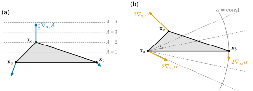
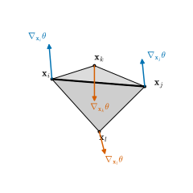
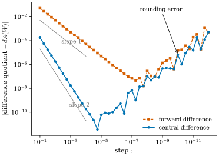

41.1 Geometric Differentiation
Goals
- vertex 위치의 함수인 기하량의 gradient를 “값이 변하지 않는 방향을 찾고, 남은 방향의 변화율을 잰다”는 두 단계로 구하고, 그 결과를 완전한 증명으로 확인할 수 있다.
- edge length, triangle area, interior angle, bending angle의 gradient를 유도하고, translation·rotation·scaling 불변성에서 오는 세 항등식으로 검사할 수 있다.
- 좌표로 무작정 미분할 때 생기는 문제(긴 식, 정밀도 손실, 부호를 잃는 분기)를 예로 설명할 수 있다.
- central difference로 gradient를 검사하는 코드를 쓰고, step size에 따른 오차의 모양을 읽을 수 있다.
Prerequisites
- gradient와 total derivative: Definition 2.4.7.
- Chapter 40의 기호: Section 40.1의 표와 Conventions 상자. face normal과 넓이 Definition 38.5.1, (38.5.2).
- bending angle: Definition 39.5.5, Proposition 39.5.6.
- plane polygon의 길이의 gradient: Proposition 32.3.6.
Motivation
Chapter 40은 질문 하나를 남기고 끝났다. 세 curvature normal은 어떤 기하량을 vertex 위치로 미분한 것인가(Chapter 40의 Leads to)? Section 40.3은 triangle의 넓이를 \(\mathbf{x}_i\)로 미분한 vector가 \((L\mathbf{x})_i\)의 식에 그대로 나타난다고 지적하고, 그 증명을 이 장으로 넘겼다(Theorem 40.3.4 뒤). 이 질문에 답하려면 mesh의 넓이, 부피, 각을 vertex 위치의 함수로 보고 미분할 수 있어야 한다.
이런 미분은 이론에만 필요한 것이 아니다. Chapter 37의 gradient flow는 energy의 gradient로 움직였다(Definition 37.6.1). mesh를 매끄럽게 만들거나, 넓이를 줄이거나, 원하는 모양에 맞추는 최적화도 모두 vertex 좌표에 대한 gradient를 쓴다. Chapter 32는 polygon의 길이의 gradient를 손으로 구했다(Proposition 32.3.6). mesh에는 vertex마다 좌표가 세 개 있고, triangle 하나의 넓이만 해도 좌표 아홉 개의 함수다. 이 절은 그런 함수를 좌표 계산에 빠지지 않고 미분하는 방법을 정리한다. 열쇠는 두 질문이다. 어느 방향으로 움직이면 값이 변하지 않는가? 남은 방향으로는 얼마나 빨리 변하는가?
Which Way, and How Fast?
gradient는 방향과 크기를 가진 vector다. 방향을 찾는 가장 쉬운 길은 그 반대, 곧 값이 변하지 않는 방향들을 찾는 것이다. \(\R^3\)에서 그런 방향이 두 개의 독립인 방향으로 이루어진 평면을 채운다면, gradient는 그 평면에 수직일 수밖에 없다. 그다음에는 수직 방향 하나로 움직일 때의 변화율만 재면 된다.
Lemma 41.1.1 (gradient from a direction and a rate). \(U \subseteq \R^3\)이 open set이고 \(f\colon U \to \R\)가 \(p \in U\)에서 미분가능하다고 하자. unit vector \(u\)에 대하여 \(u\)에 수직인 모든 \(w\)에서 \(df_p(w) = 0\)이면
\[ \nabla f(p) = df_p(u)\,u \]
이다. 특히 \(\abs{\nabla f(p)} = \abs{df_p(u)}\)이다.
Proof. \(u\)를 포함하는 orthonormal basis \((u, w_1, w_2)\)를 잡자. \(\nabla f(p)\)의 성분은 \(\inner{\nabla f(p)}{b} = df_p(b)\)이고(Definition 2.4.7과 chain rule), 가정에서 \(df_p(w_1) = df_p(w_2) = 0\)이므로 \(\nabla f(p) = df_p(u)\,u + 0\,w_1 + 0\,w_2\)이다.
쓸 때는 두 질문을 차례로 묻는다. (1) 1차까지 값을 바꾸지 않는 움직임은 무엇인가? 대개 대칭에서 답이 나온다. 선분을 따라 미끄러지기, 어떤 축 둘레로 돌기, 평면 밖으로 수직하게 들기 같은 것이다. (2) 남은 한 방향으로 단위 속력으로 움직이면 값이 얼마나 빨리 변하는가? 이것이 크기다. 강의 슬라이드도 같은 두 단계를 “기하적 미분”의 요리법으로 소개한다 [CMU-DDG L17] slide 9.
Proposition 41.1.2 (gradient of an edge length). \(\mathbf{a} \neq \mathbf{b}\)이고 \(\ell = \abs{\mathbf{b} - \mathbf{a}}\), \(\hat u = (\mathbf{b} - \mathbf{a})/\ell\)이면 \(\nabla_{\mathbf{a}}\ell = -\hat u\), \(\nabla_{\mathbf{b}}\ell = \hat u\)이다.
Proof. \(\mathbf{b}\)를 고정하고 \(\mathbf{a}\)를 움직인다. \(w \perp \hat u\)이면 \(\ell(\mathbf{a} + tw) = \sqrt{\ell^2 + t^2\abs w^2}\)이고, 이것의 \(t = 0\)에서의 미분은 \(0\)이다. \(-\hat u\) 방향으로는 \(t \gt -\ell\)에서 \(\ell(\mathbf{a} - t\hat u) = \ell + t\)이므로 변화율이 \(1\)이다. Lemma 41.1.1에서 \(\nabla_{\mathbf{a}}\ell = 1\cdot(-\hat u)\)이다. \(\mathbf{b}\)도 같다.
closed polygon의 길이 \(L = \sum\ell_i\)에서 vertex \(\gamma_i\)는 두 edge에 들어 있으므로 \(\nabla_{\gamma_i}L = \mathbf{t}_{i-1} - \mathbf{t}_i\)이고, 이것이 Proposition 32.3.6의 \(-\kappa^B_i\mathbf{n}_i\)였다. 이 장은 같은 일을 surface의 넓이에서 한다.
Rigid Motions and Scaling
방향을 찾을 때 가장 많이 쓰는 도구는 대칭이다. 기하량은 대개 mesh를 통째로 translate하거나 돌려도 바뀌지 않고, 늘이면 정해진 degree로 바뀐다. 이 사실이 gradient에 항등식을 준다.
Proposition 41.1.3 (identities from rigid motions and scaling). \(f\)가 점 \(\mathbf{x}_1, \dots, \mathbf{x}_m \in \R^3\)의 미분가능한 함수라 하자.
(a) 모든 \(\mathbf{c} \in \R^3\)에서 \(f(\mathbf{x}_1 + \mathbf{c}, \dots, \mathbf{x}_m + \mathbf{c}) = f(\mathbf{x})\)이면 \(\sum_a\nabla_{\mathbf{x}_a}f = 0\)이다.
(b) 모든 rotation \(Q \in \mathrm{SO}(3)\)에서 \(f(Q\mathbf{x}_1, \dots, Q\mathbf{x}_m) = f(\mathbf{x})\)이면 \(\sum_a\mathbf{x}_a\times\nabla_{\mathbf{x}_a}f = 0\)이다.
(c) 모든 \(s \gt 0\)에서 \(f(s\mathbf{x}) = s^kf(\mathbf{x})\)이면 \(\sum_a\inner{\mathbf{x}_a}{\nabla_{\mathbf{x}_a}f} = kf(\mathbf{x})\)이다.
Proof idea: 각 불변성을 한 매개변수 움직임으로 쓰고 \(t = 0\)에서 미분한다. 셋은 차례로 total force, total torque, virial이 \(0\)이라는 식과 모양이 같다.
Proof. (a) \(w \in \R^3\)을 고정하면 \(f(\mathbf{x}_1 + tw, \dots) = f(\mathbf{x})\)이다. \(t = 0\)에서 미분하면 (41.1.1)에서 \(0 = \sum_a\inner{\nabla_{\mathbf{x}_a}f}{w} = \inner{\sum_a\nabla_{\mathbf{x}_a}f}{w}\)이고, \(w\)가 임의이므로 합이 \(0\)이다. (b) unit vector \(\omega\) 둘레로 각 \(t\)만큼 도는 rotation은(Definition 39.5.5의 \(R\))
\[ \begin{aligned} R(\omega, t)\mathbf{y} &= \cos t\,\mathbf{y} + \sin t\,\omega\times\mathbf{y} \\ &\quad + (1 - \cos t)\inner{\omega}{\mathbf{y}}\omega \end{aligned} \]
이고, 그 \(t = 0\)에서의 미분은 \(\omega\times\mathbf{y}\)이다. \(f(R(\omega, t)\mathbf{x}_1, \dots) = f(\mathbf{x})\)를 미분하면 \(0 = \sum_a\inner{\nabla_{\mathbf{x}_a}f}{\omega\times\mathbf{x}_a}\)이고, scalar triple product의 순환 \(\inner{\mathbf{p}}{\omega\times\mathbf{q}} = \inner{\omega}{\mathbf{q}\times\mathbf{p}}\)에서 이것은 \(\inner{\omega}{\sum_a\mathbf{x}_a\times\nabla_{\mathbf{x}_a}f}\)이다. \(\omega\)가 임의의 unit vector이므로 합이 \(0\)이다. (c) \(s \mapsto f(s\mathbf{x}) = s^kf(\mathbf{x})\)를 \(s = 1\)에서 미분하면 왼쪽은 chain rule로 \(\sum_a\inner{\nabla_{\mathbf{x}_a}f}{\mathbf{x}_a}\), 오른쪽은 \(kf(\mathbf{x})\)이다.
세 식은 gradient 공식을 검사하는 데도, 모르는 gradient를 구하는 데도 쓰인다. 넓이는 \(k = 2\), 부피는 \(k = 3\), 길이는 \(k = 1\), 각은 \(k = 0\)이다. 아래 bending angle의 gradient(Proposition 41.1.8)에서는 네 gradient 가운데 둘을 직접 구하고 나머지 둘을 이 세 식으로 정한다.
Proposition 41.1.4 (gradient of a triangle area). 퇴화하지 않은 triangle \(f = (i, j, k)\)에서
이다. 곧 맞은편 edge를 face의 평면 안에서 \(+90^\circ\) 돌린 vector의 절반이고, \(\mathbf{x}_i\) 쪽을 향하며 크기는 \(\tfrac12\ell_{jk}\)이다. \(\mathbf{x}_j\), \(\mathbf{x}_k\)에 대해서도 \((i, j, k)\)를 순환시켜 같은 식이 성립한다.
Proof. \(\mathbf{x}_j, \mathbf{x}_k\)를 고정하고 \(\mathbf{x}_i\)를 움직인다. \(h_i\)를 \(\mathbf{x}_i\)에서 직선 \(\mathbf{x}_j\mathbf{x}_k\)까지의 거리라 하면 \(A_f = \tfrac12\ell_{jk}h_i\)이다. \(\mathbf{x}_i\)를 \(\hat e_{jk}\) 방향으로 움직이면 \(h_i\)가 그대로이고, \(\mathbf{N}_f\) 방향으로 \(t\)만큼 움직이면 \(h_i(t) = \sqrt{h_i^2 + t^2}\)이라 \(t = 0\)에서의 미분이 \(0\)이다. 남은 방향은 \(d = \mathbf{N}_f\times\hat e_{jk}\)다. 이 방향이 \(\mathbf{x}_i\) 쪽을 향하는 것은 \(\inner{d}{\mathbf{x}_i - \mathbf{x}_j} = \inner{\mathbf{N}_f}{\hat e_{jk}\times(\mathbf{x}_i - \mathbf{x}_j)}\)이고, \((\mathbf{x}_k - \mathbf{x}_j)\times(\mathbf{x}_i - \mathbf{x}_j) = 2A_f\mathbf{N}_f\)(Definition 38.5.1의 cross product를 순환시킨 것)이라 이 값이 \(2A_f/\ell_{jk} = h_i \gt 0\)이기 때문이다. 그래서 \(\mathbf{x}_i\)를 \(d\) 방향으로 \(t\)만큼 움직이면 \(h_i\)가 \(t\)만큼 늘고, 변화율은 \(\tfrac12\ell_{jk}\)이다. Lemma 41.1.1에서 \(\nabla_{\mathbf{x}_i}A_f = \tfrac12\ell_{jk}\,d\)이고, 이것이 (41.1.2)다.
세 gradient를 더하면 \(\tfrac12\mathbf{N}_f\)와 세 edge vector의 합 \((\mathbf{x}_k - \mathbf{x}_j) + (\mathbf{x}_i - \mathbf{x}_k) + (\mathbf{x}_j - \mathbf{x}_i) = 0\)의 cross product이므로 \(0\)이다. Proposition 41.1.3(a)가 요구하는 대로다. (b)와 \(k = 2\)인 (c)도 성립한다(Exercise 41.1.5).
Figure 41.1.1의 왼쪽 (a)를 보자. 회색 triangle의 두 vertex \(\mathbf{x}_a, \mathbf{x}_b\)를 고정하고 \(\mathbf{x}_c\)만 움직이면, 넓이가 같은 위치들은 밑변 \(\mathbf{x}_a\mathbf{x}_b\)에 평행한 회색 점선이다(\(A = 1, 2, 3, 4\)). \(\mathbf{x}_c\)에서 나가는 파란 화살표 \(\tfrac12\nabla_{\mathbf{x}_c}A\)는 이 점선에 수직이고, 실제 길이 \(2\)는 밑변 길이 \(4\)의 절반이다. 나머지 두 vertex의 파란 화살표도 각자의 맞은편 edge에 수직이고, 셋을 이어 붙이면 닫힌다. 오른쪽 (b)는 각 \(\alpha\)(vertex \(\mathbf{x}_a\)의 내각)다. \(\mathbf{x}_b\)를 움직일 때 \(\alpha\)가 같은 위치들은 \(\mathbf{x}_a\)에서 나가는 반직선(회색 점선)이다. 그래서 \(\nabla_{\mathbf{x}_b}\alpha\)(주황)는 반직선에 수직이고, \(\mathbf{x}_a\)를 중심으로 \(\mathbf{x}_b\)를 지나는 회색 원을 따라간다.

Example 41.1.5 (an equilateral and an obtuse triangle). (a) 한 변이 \(1\)인 정삼각형 \((0, 0), (1, 0), (\tfrac12, \tfrac{\sqrt3}{2})\)에서 세 area gradient는 크기가 모두 \(\tfrac12\)이고, 무게중심에서 각 vertex로 향하는 방향이다(예: 셋째 vertex에서 \((0, \tfrac12)\)). 세 vector가 \(120^\circ\)씩 벌어져 합이 \(0\)이다. (b) \(\mathbf{x}_a = (0, 0)\), \(\mathbf{x}_b = (4, 0)\), \(\mathbf{x}_c = (1, 1)\)은 \(\mathbf{x}_c\)의 각이 \(116.57^\circ\)인 obtuse triangle이다(나머지 각은 \(45^\circ\), \(18.43^\circ\)). area gradient는 \((-0.5, -1.5)\), \((0.5, -0.5)\), \((0, 2)\)이고 크기 \(1.581, 0.707, 2\)는 맞은편 edge의 길이 \(\sqrt{10}, \sqrt2, 4\)의 절반이다. 가장 긴 edge의 맞은편, 곧 obtuse vertex를 움직일 때 넓이가 가장 빨리 변한다. \(\mathbf{x}_a = 0\)이므로 \(\sum_c\inner{\mathbf{x}_c}{\nabla_{\mathbf{x}_c}A}\)는 \(\inner{(4, 0)}{(0.5, -0.5)} = 2\)와 \(\inner{(1, 1)}{(0, 2)} = 2\)의 합 \(4 = 2A\)이고, Proposition 41.1.3(c)의 \(k = 2\)와 맞는다.
Verification: verify/v-41-1-geometric-differentiation.py
Angles
Proposition 41.1.6 (gradient of an interior angle). 퇴화하지 않은 triangle \((\mathbf{a}, \mathbf{b}, \mathbf{c})\)에서 \(u = \mathbf{b} - \mathbf{a}\), \(v = \mathbf{c} - \mathbf{a}\), \(\mathbf{N} = u\times v/\abs{u\times v}\)이고 \(\alpha \in (0, \pi)\)가 \(\mathbf{a}\)의 내각이면
이다.
Proof. \(\mathbf{a}, \mathbf{c}\)를 고정하고 \(\mathbf{b}\)를 움직인다. \(\alpha\)는 \(u\)의 방향에만 의존하므로 \(u\) 방향의 움직임은 \(\alpha\)를 바꾸지 않는다. \(\mathbf{N}\) 방향으로 \(t\)만큼 움직이면
\[ \cos\alpha(t) = \frac{\inner{u + t\mathbf{N}}{v}}{\abs{u + t\mathbf{N}}\abs v} = \frac{\inner uv}{\sqrt{\abs u^2 + t^2}\,\abs v} \]
이므로 \(\tfrac{d}{dt}\cos\alpha = 0\)이고, \(\sin\alpha \neq 0\)이라 \(\alpha'(0) = 0\)이다. 남은 방향은 평면 안에서 \(u\)에 수직인 \(\mathbf{N}\times u/\abs u\)이다. \(\inner{\mathbf{N}\times u}{v} = \inner{\mathbf{N}}{u\times v} = \abs{u\times v} \gt 0\)이므로 이 방향은 \(v\) 쪽을 향하고, \(\mathbf{b}\)를 이 방향으로 \(t\)만큼 움직이면 반직선 \(\mathbf{a}\mathbf{b}\)가 \(v\) 쪽으로 \(\arctan(t/\abs u)\)만큼 돌아 \(\alpha\)가 그만큼 줄어든다. 변화율은 \(-1/\abs u\)이고, Lemma 41.1.1에서 첫 식이다. 둘째 식도 같다. 다만 \(\inner{\mathbf{N}\times v}{u} = -\abs{u\times v} \lt 0\)이라 \(\mathbf{N}\times v\)는 \(u\)에서 멀어지는 쪽이고, 그 방향으로 \(\mathbf{c}\)를 움직이면 각이 벌어진다. 셋째 식은 \(\alpha\)가 translation에 불변이므로 Proposition 41.1.3(a)다.
\(\alpha\)는 scaling에도 불변(\(k = 0\))이다. 실제로 (a)를 쓰면 \(\sum\inner{\mathbf{x}}{\nabla\alpha} = \inner{u}{\nabla_{\mathbf{b}}\alpha} + \inner{v}{\nabla_{\mathbf{c}}\alpha}\)이고, 두 항 모두 \(\mathbf{N}\times u \perp u\), \(\mathbf{N}\times v \perp v\)라 \(0\)이다. triangle의 세 내각의 합은 \(\pi\)이므로 각 vertex에서 세 angle gradient의 합도 \(0\)이다. Section 41.2에서 total angle defect의 gradient가 \(0\)임을 볼 때 이 사실을 다시 쓴다.
Non-example 41.1.7 (differentiating through the arccos). 각을 \(\alpha = \arccos\big(\inner uv/(\abs u\abs v)\big)\)로 쓰고 chain rule을 그대로 쓰면 \(\nabla\alpha = -\nabla\cos\alpha/\sqrt{1 - \cos^2\alpha}\)이다. 식은 맞지만 세 가지 문제가 생긴다. (1) 식이 길다. sympy로 \(\partial\alpha/\partial a_x\)를 구하면 연산이 \(132\)개, 넓이의 \(\partial A/\partial a_x\)만 해도 \(55\)개다((41.1.2)는 cross product 하나다). (2) \(\alpha\)가 \(0\)이나 \(\pi\)에 가까우면 \(1 - \cos^2\alpha\)에서 자릿수가 사라진다. \(\mathbf{a} = 0\), \(\mathbf{b} = e_1\), \(\mathbf{c} = (-\cos\varepsilon, \sin\varepsilon, 0)\)(\(\alpha = \pi - \varepsilon\))에서 정확한 값은 \(\nabla_{\mathbf{b}}\alpha = -e_2\)인데, 이 길로 계산하면 \(\varepsilon = 10^{-6}\)에서 상대오차 \(7\times10^{-5}\), \(\varepsilon = 10^{-7}\)에서 \(4\times10^{-4}\)이고, \(\varepsilon = 10^{-8}\)에서는 \(1 - \cos^2\alpha\)가 \(0\)이 되어 값이 나오지 않는다. (41.1.3)은 같은 점에서 반올림 오차 수준이다. (3) 부호를 잃는 분기. bending angle을 \(\arccos\inner{\mathbf{N}_f}{\mathbf{N}_g}\)로 쓰면 그것은 \(\abs{\theta_{ij}}\)이다. concave edge에서 부호가 틀리고, flat edge(\(\theta_{ij} = 0\))에서는 \(\abs\theta\)가 꺾여서 미분조차 되지 않는다. 평평한 곳이 많은 mesh에서 flat edge는 흔하다. Definition 39.5.5가 atan2로 signed angle를 정의한 이유다.
Verification: verify/v-41-1-geometric-differentiation.py
The Bending Angle of a Hinge
이제 Section 41.2의 total mean curvature에 필요한 마지막 조각이다. 두 face \(f = (i, j, k)\), \(g = (j, i, l)\)이 edge \(ij\)를 공유하는 hinge의 bending angle \(\theta = \theta_{ij}\)를 네 vertex로 미분한다. \(s_k = \inner{\mathbf{x}_k - \mathbf{x}_i}{\hat e_{ij}}/\ell_{ij}\)는 \(\mathbf{x}_k\)에서 edge의 직선에 내린 수선의 발이 edge의 어디에 있는지를 나타낸다(\(\mathbf{x}_i\)에서 \(0\), \(\mathbf{x}_j\)에서 \(1\)). \(s_l\)도 같다.
Proposition 41.1.8 (gradient of the bending angle). 두 face가 퇴화하지 않고 \(\abs{\theta} \lt \pi\)이면
이다. 짧게 \(g_a := \nabla_{\mathbf{x}_a}\theta\)라 쓴다.
Proof idea: \(\mathbf{x}_k\)는 \(\mathbf{N}_f\)를 통해서만 \(\theta\)에 들어가므로 Lemma 41.1.1로 바로 구한다. \(\mathbf{x}_i, \mathbf{x}_j\)는 edge 자체를 움직여 계산이 길어지지만, Proposition 41.1.3의 세 항등식이 그 두 gradient를 하나로 정해 준다.
Proof. \(\mathbf{x}_k\)와 \(\mathbf{x}_l\). \(\hat e = \hat e_{ij}\), \(\mathbf{p}\)를 \(\mathbf{x}_k\)에서 edge의 직선에 내린 수선의 발, \(h_k = \abs{\mathbf{x}_k - \mathbf{p}} = 2A_f/\ell_{ij}\), \(\hat d = (\mathbf{x}_k - \mathbf{p})/h_k\)라 하자. \(\mathbf{p} - \mathbf{x}_i \parallel \hat e\)이므로 \(2A_f\mathbf{N}_f = \ell_{ij}\hat e\times(\mathbf{x}_k - \mathbf{x}_i) = \ell_{ij}\hat e\times(\mathbf{x}_k - \mathbf{p})\), 곧 \(\mathbf{N}_f = \hat e\times\hat d\)이다. \(\theta\)는 \(\mathbf{x}_k\)에 \(\mathbf{N}_f\)를 통해서만 의존한다. \(\mathbf{x}_k\)를 face의 평면 안에서 조금 움직이면 평면과 orientation이 그대로라 \(\mathbf{N}_f\), 따라서 \(\theta\)가 그대로다. 남은 방향 \(\mathbf{N}_f\)로 \(t\)만큼 움직이면 같은 계산으로 새 normal은
\[ \begin{aligned} \mathbf{N}_f(t) &= \frac{\hat e\times(h_k\hat d + t\mathbf{N}_f)}{\sqrt{h_k^2 + t^2}} \\ &= \cos\phi\,\mathbf{N}_f + \sin\phi\,\hat e\times\mathbf{N}_f \\ &= R(\hat e, \phi)\,\mathbf{N}_f \end{aligned} \]
이다. 여기서 \(\tan\phi = t/h_k\)이고, 마지막 등호는 \(\mathbf{N}_f \perp \hat e\)일 때의 Rodrigues 식이다. \(\mathbf{N}_g = R(\hat e, \theta)\mathbf{N}_f = R(\hat e, \theta - \phi)\mathbf{N}_f(t)\)이므로 \(\theta(t) = \theta - \phi(t)\)이고, 변화율은 \(-1/h_k = -\ell_{ij}/(2A_f)\)이다. Lemma 41.1.1에서 첫 식이다. \(g\)는 edge를 \(j \to i\)로 지나므로 \(-\hat e\)를 축으로 같은 계산을 한다. \(\mathbf{N}_f = R(-\hat e, \theta)\mathbf{N}_g\)이고 \(\mathbf{x}_l\)을 \(\mathbf{N}_g\) 방향으로 들면 \(\mathbf{N}_g\)가 \(-\hat e\) 둘레로 \(\phi\)만큼 돌아 \(\theta\)가 \(\phi\)만큼 줄어든다. 그래서 둘째 식이다.
\(\mathbf{x}_i\)와 \(\mathbf{x}_j\). \(\theta\)는 \(\mathbf{N}_f\), \(\mathbf{N}_g\), \(\hat e\)로 정해지므로 translation과 rotation에 불변이고(셋이 함께 돌아 atan2의 두 인자가 그대로다), scaling에도 불변(\(k = 0\))이다. 그래서 진짜 gradient는 Proposition 41.1.3의 세 식을 만족한다. 거꾸로 \(\nabla_{\mathbf{x}_k}\theta\), \(\nabla_{\mathbf{x}_l}\theta\)를 고정하면 세 식을 만족하는 \((\nabla_{\mathbf{x}_i}\theta, \nabla_{\mathbf{x}_j}\theta)\)는 하나뿐이다. 두 후보의 차이를 \(\delta_i, \delta_j\)라 하면 \(\delta_i + \delta_j = 0\), \(\mathbf{x}_i\times\delta_i + \mathbf{x}_j\times\delta_j = 0\), \(\inner{\mathbf{x}_i}{\delta_i} + \inner{\mathbf{x}_j}{\delta_j} = 0\)이다. 첫 식을 넣으면 \((\mathbf{x}_i - \mathbf{x}_j)\times\delta_i = 0\)이라 \(\delta_i \parallel \hat e\)이고, \(\inner{\mathbf{x}_i - \mathbf{x}_j}{\delta_i} = 0\)이라 \(\delta_i \perp \hat e\)이므로 \(\delta_i = 0\)이다. 따라서 (41.1.4)의 셋째, 넷째 식이 세 항등식을 만족함을 보이면 된다. \(g_k = \nabla_{\mathbf{x}_k}\theta\), \(g_l = \nabla_{\mathbf{x}_l}\theta\)라 쓰고, translation 불변성은 coefficient의 합이 맞으므로 성립한다(\(-(1 - s_k) - s_k + 1 = 0\)). 나머지 둘은 모든 항이 translation에 불변이므로 \(\mathbf{x}_i = 0\)으로 두고 계산해도 된다. 그러면 \(\mathbf{x}_j = \ell_{ij}\hat e\)이고 \(\mathbf{x}_k = s_k\ell_{ij}\hat e + h_k\hat d\)이다. rotation:
\[ \begin{aligned} &\mathbf{x}_j\times g_j + \mathbf{x}_k\times g_k + \mathbf{x}_l\times g_l \\ &\quad = (\mathbf{x}_k - s_k\ell_{ij}\hat e)\times g_k \\ &\qquad + (\mathbf{x}_l - s_l\ell_{ij}\hat e)\times g_l \\ &\quad = h_k\hat d\times g_k + h_l\hat d'\times g_l \end{aligned} \]
이다. 여기서 \(\hat d'\)은 \(g\)의 평면에서 \(\mathbf{x}_l\) 쪽으로 edge에 수직인 unit vector이고, 같은 계산으로 \(\mathbf{N}_g = -\hat e\times\hat d'\)이다. \(\hat d\times\mathbf{N}_f = \hat d\times(\hat e\times\hat d) = \hat e\)이고 \(\hat d'\times\mathbf{N}_g = -\hat e\)이므로 두 항은 \(-\hat e\)와 \(+\hat e\)가 되어 상쇄된다. scaling도 같은 방법으로
\[ \begin{aligned} &\inner{\mathbf{x}_j}{g_j} + \inner{\mathbf{x}_k}{g_k} + \inner{\mathbf{x}_l}{g_l} \\ &\quad = h_k\inner{\hat d}{g_k} + h_l\inner{\hat d'}{g_l} = 0 \end{aligned} \]
이다(\(\inner{\hat e}{g_k} = \inner{\hat e}{g_l} = 0\)이고 \(\hat d \perp \mathbf{N}_f\), \(\hat d' \perp \mathbf{N}_g\)).
첫 식의 부호는 그림으로 기억할 수 있다. convex edge(\(\theta \gt 0\))에서 \(\mathbf{x}_k\)를 자기 face의 normal 쪽으로 들면 hinge가 펴져 \(\theta\)가 줄어든다. 노트의 부록은 \(\mathbf{x}_k\), \(\mathbf{x}_l\)에 대한 식만 적고 나머지는 다른 논문의 부록을 가리킨다 [Cr App. A]. 여기서는 그 둘을 불변성으로 얻었다. coefficient \(1 - s_k\)와 \(s_k\)는 지렛대처럼 읽을 수 있다. \(\mathbf{x}_k\)의 수선의 발이 \(\mathbf{x}_i\)에 가까울수록(\(s_k\)가 작을수록) \(\mathbf{x}_i\)가 \(\mathbf{x}_k\)의 움직임을 더 많이 상쇄한다.
Example 41.1.9 (a hinge). \(\mathbf{x}_i = (0, 0, 0)\), \(\mathbf{x}_j = (2, 0, 0)\), \(\mathbf{x}_k = (0.6, 1.2, 0)\), \(\mathbf{x}_l = (1.3, -1, -0.7)\)이라 하자. \(f\)는 \(xy\) 평면에 있고 \(\mathbf{N}_f = e_3\)이며, \(\mathbf{x}_l\)이 그 아래에 있으므로 convex edge다. \(\theta = 0.6107\)(\(34.99^\circ\))이다. \(A_f = 1.2\)이므로 \(\nabla_{\mathbf{x}_k}\theta = -\tfrac{2}{2.4}e_3 = (0, 0, -0.8333)\)이다. 나머지는 \(\nabla_{\mathbf{x}_l}\theta = (0, 0.4698, -0.6711)\), \(\nabla_{\mathbf{x}_i}\theta = (0, -0.1644, 0.8182)\), \(\nabla_{\mathbf{x}_j}\theta = (0, -0.3054, 0.6862)\)(\(s_k = 0.3\), \(s_l = 0.65\))이다. 네 vector의 합, torque의 합, \(\sum\inner{\mathbf{x}}{\nabla\theta}\)는 모두 \(0\)이고, central difference와 \(10^{-10}\) 안에서 같다. 모든 gradient가 edge 방향 성분을 갖지 않는 것도 볼 수 있다. edge를 따라 늘이거나 미끄러뜨리는 것은 bending angle을 바꾸지 않는다.
Verification: verify/v-41-1-geometric-differentiation.py
Figure 41.1.2가 이 hinge다. 굵은 검은 선이 edge \(ij\)이고, 위의 밝은 face가 \(f\), 아래로 꺾인 face가 \(g\)다. 주홍 화살표 \(\nabla_{\mathbf{x}_k}\theta\)는 \(f\)의 normal의 반대쪽(아래)을 향한다. \(\mathbf{x}_k\)를 내리면 hinge가 더 꺾이기 때문이다. \(\nabla_{\mathbf{x}_l}\theta\)도 \(g\)의 normal의 반대쪽을 향한다. 파란 두 화살표 \(\nabla_{\mathbf{x}_i}\theta\), \(\nabla_{\mathbf{x}_j}\theta\)는 대략 위를 향한다. edge를 들어 올리면 두 face가 지붕처럼 더 꺾이기 때문이다.

Checking a Gradient
손으로 유도한 gradient는 반드시 수치로 확인한다. 가장 간단한 검사는 finite difference다. 방향 \(W\)를 하나 잡고 \(f(\mathbf{x} + \varepsilon W)\)를 Taylor 전개하면
이다(\(f_\pm = f(\mathbf{x} \pm \varepsilon W)\). 둘째 식에서는 \(\varepsilon^2\)항이 상쇄된다). 앞의 것이 forward difference, 뒤의 것이 central difference(중심 차분)다. 그런데 \(\varepsilon\)을 한없이 줄일 수는 없다. \(f\)의 값에 붙는 상대오차 약 \(10^{-16}\)이 \(\varepsilon\)으로 나뉘어 커지기 때문이다. 그래서 오차는 \(\varepsilon\)이 작아지며 줄다가 어느 지점부터 다시 늘어난다.
Figure 41.1.3을 오른쪽에서 왼쪽으로, 곧 \(\varepsilon\)이 작아지는 쪽으로 읽자. 가로축은 오른쪽으로 갈수록 작다. 처음에는 주홍(forward)이 기울기 \(1\), 파랑(central)이 기울기 \(2\)인 회색 안내선과 나란히 떨어진다. central은 \(\varepsilon \approx 2\times10^{-5}\)에서 오차 \(4\times10^{-12}\)으로 가장 작고, forward는 \(\varepsilon \approx 10^{-8}\) 근처에서 \(10^{-8}\) 수준으로 가장 작다. 그보다 작은 \(\varepsilon\)에서는 두 곡선이 함께 들쭉날쭉 올라간다. 반올림 오차의 몫이다. 실무에서는 central difference를 \(\varepsilon = 10^{-5}\)–\(10^{-6}\) 근처로 쓰고, 상대오차 \(10^{-8}\)쯤이면 공식이 맞다고 본다.

icosphere(1)의 vertex마다 \(1 + 0.2u_k\)배, \(u_k\)는 \([-1, 1]\)의 균등 난수, seed 4)의 넓이 \(A\)를 한 방향 \(W\)(\(\R^{126}\)의 무작위 unit vector, seed 5)로 미분한 값 \(dA(W) = 0.4943\)과 두 difference quotient의 차이. \(\varepsilon = 10^{-1}, \dots, 10^{-12}\).
읽는 법: 가로축은 \(\varepsilon\)(log, 오른쪽으로 작아진다), 세로축은 \(\abs{\text{difference quotient} - dA(W)}\)(log)다. 주홍 사각형이 forward difference, 파란 동그라미가 central difference, 회색 직선이 기울기 \(1\)과 \(2\)의 안내선이다.
볼 것: \(\varepsilon\)이 클 때 오차는 forward에서 \(\varepsilon\)에, central에서 \(\varepsilon^2\)에 비례한다. central의 최소는 \(\varepsilon \approx 1.8\times10^{-5}\)에서 \(3.7\times10^{-12}\)이다. 더 작은 \(\varepsilon\)에서는 반올림 오차가 지배해 두 방법 모두 나빠진다(\(\varepsilon = 10^{-12}\)에서 약 \(10^{-4}\)).
본문과의 연결: (41.1.5), Proposition 41.1.4.Remark 41.1.10 (other ways to get a gradient). 이 절의 기하적 유도 말고도 gradient를 얻는 흔한 길이 셋 있다 [Cr App. A] [CMU-DDG L17] slide 14. finite difference는 함수만 있으면 되지만 vertex마다 \(f\)를 여러 번 계산해야 하고 정확도가 \(10^{-10}\) 근처에서 멈춘다(위 그림). symbolic differentiation(sympy 등)은 정확하지만 식이 길어진다(Non-example 41.1.7). automatic differentiation은 프로그램의 연산마다 chain rule을 적용해 gradient를 기계 정밀도로 준다. 3D vision에서 mesh를 최적화할 때 흔히 쓰는 방식이다. 다만 그 결과는 수의 배열이고, 예를 들어 넓이의 gradient가 cotan Laplacian이라는 사실은 알려 주지 않는다. 이 절의 기하적 유도는 짧은 공식과 그 뜻을 함께 준다. 그 뜻이 Section 41.2의 주제다.
Summary
- gradient는 값이 변하지 않는 방향들에 수직이다. 그 방향들이 평면을 채우면 남은 한 방향의 변화율이 크기다(Lemma 41.1.1).
- translation, rotation, scaling(degree \(k\))에 대한 불변성은 \(\sum\nabla f = 0\), \(\sum\mathbf{x}\times\nabla f = 0\), \(\sum\inner{\mathbf{x}}{\nabla f} = kf\)를 준다(Proposition 41.1.3).
- edge length의 gradient는 unit edge vector, triangle area의 gradient는 \(\tfrac12\mathbf{N}_f\times(\mathbf{x}_k - \mathbf{x}_j)\), interior angle의 gradient는 \(\mp\mathbf{N}\times u/\abs u^2\)이다(Proposition 41.1.2, Proposition 41.1.4, Proposition 41.1.6).
- bending angle은 맞은편 두 vertex에서 \(-\ell_{ij}\mathbf{N}/(2A)\)의 gradient를 갖고, edge의 두 끝의 gradient는 불변성이 정한다(Proposition 41.1.8).
- arccos를 거쳐 미분하면 식이 길고 \(0\), \(\pi\) 근처에서 정밀도를 잃으며, 부호 없는 bending angle은 flat edge에서 미분되지 않는다(Non-example 41.1.7). 공식은 central difference로 확인한다.
다음 절에서는 이 조각들을 mesh 전체에서 더한다. enclosed volume의 gradient는 vector area이고, 넓이의 gradient는 \(-(L\mathbf{x})_i\)이며, total mean curvature의 gradient는 Gauss curvature normal이다. 마지막 것에는 Schläfli formula가 필요하다.
Exercises
Exercise 41.1.1 ★ \(h(\mathbf{x}_k)\)를 점 \(\mathbf{x}_k\)에서 고정된 직선 \(\mathbf{x}_i\mathbf{x}_j\)까지의 거리라 하자(\(\mathbf{x}_k\)는 직선 위에 있지 않다). Lemma 41.1.1로 \(\nabla_{\mathbf{x}_k}h = \hat d\)(수선의 발에서 \(\mathbf{x}_k\)로 가는 unit vector)임을 보이고, 이것으로 Proposition 41.1.4를 다시 얻어라.
Solution
수선의 발을 \(\mathbf{p}\), \(\hat e = \hat e_{ij}\)라 하면 \(h = \abs{\mathbf{x}_k - \mathbf{p}}\)이다. \(\mathbf{x}_k\)를 \(\hat e\) 방향으로 움직이면 수선의 발도 같이 움직여 \(h\)가 그대로다. \(\hat e\)와 \(\hat d\)에 모두 수직인 방향 \(n\)으로 \(t\)만큼 움직이면 \(h(t) = \sqrt{h^2 + t^2}\)이라 미분이 \(0\)이다. \(\hat d\) 방향으로는 \(h(t) = h + t\)라 변화율이 \(1\)이다. 따라서 \(\nabla h = \hat d\)이다. \(A_f = \tfrac12\ell_{ij}h\)이고 \(\ell_{ij}\)는 \(\mathbf{x}_k\)에 의존하지 않으므로 \(\nabla_{\mathbf{x}_k}A_f = \tfrac12\ell_{ij}\hat d\)이다. \(f = (i, j, k)\)에서 \(\mathbf{N}_f = \hat e\times\hat d\)(Proposition 41.1.8의 증명)이므로 \(\mathbf{N}_f\times\hat e = \hat d\), 곧 \(\tfrac12\ell_{ij}\hat d = \tfrac12\mathbf{N}_f\times(\mathbf{x}_j - \mathbf{x}_i)\)이다. face를 \((k, i, j)\)로 순환시키면 이것이 (41.1.2)의 \(\mathbf{x}_k\)판이다.
Exercise 41.1.2 ★ 직각이등변삼각형 \(\mathbf{x}_1 = (0, 0, 0)\), \(\mathbf{x}_2 = (1, 0, 0)\), \(\mathbf{x}_3 = (0, 1, 0)\)에서 세 area gradient와 \(\mathbf{x}_1\)의 내각(\(90^\circ\))의 세 gradient를 구하고, Proposition 41.1.3의 세 항등식을 확인하여라.
Solution
\(\mathbf{N} = e_3\)이다. (41.1.2)에서 맞은편 edge가 \(\mathbf{x}_3 - \mathbf{x}_2 = (-1, 1, 0)\), \(\mathbf{x}_1 - \mathbf{x}_3 = (0, -1, 0)\), \(\mathbf{x}_2 - \mathbf{x}_1 = e_1\)이므로 \(\nabla_{\mathbf{x}_1}A = (-\tfrac12, -\tfrac12, 0)\), \(\nabla_{\mathbf{x}_2}A = (\tfrac12, 0, 0)\), \(\nabla_{\mathbf{x}_3}A = (0, \tfrac12, 0)\)이다. 합은 \(0\)이고, torque는 \(\mathbf{x}_2\times(\tfrac12, 0, 0) + \mathbf{x}_3\times(0, \tfrac12, 0) = 0\), \(\sum\inner{\mathbf{x}}{\nabla A} = \tfrac12 + \tfrac12 = 1 = 2A\)이다. 각: \(u = e_1\), \(v = e_2\)이므로 \(\nabla_{\mathbf{x}_2}\alpha = -e_3\times e_1 = -e_2\), \(\nabla_{\mathbf{x}_3}\alpha = e_3\times e_2 = -e_1\), \(\nabla_{\mathbf{x}_1}\alpha = e_1 + e_2\)이다. \(\mathbf{x}_2\)를 \(-e_2\) 쪽으로 내리면 각이 벌어지는 것과 맞다. 합은 \(0\), torque는 \(e_1\times(-e_2) + e_2\times(-e_1) = -e_3 + e_3 = 0\), \(\sum\inner{\mathbf{x}}{\nabla\alpha} = \inner{e_1}{-e_2} + \inner{e_2}{-e_1} = 0\)(\(k = 0\))이다.
Exercise 41.1.3 ★ 참인지 거짓인지 말하고 이유를 써라. (a) triangle의 넓이의 gradient는 그 vertex를 지나는 두 edge에 수직이다. (b) \(\nabla_{\mathbf{b}}\alpha\)는 edge \(\mathbf{a}\mathbf{b}\)에 수직이다. (c) \(\arccos\inner{\mathbf{N}_f}{\mathbf{N}_g}\)는 flat edge에서 vertex 위치에 대해 미분가능하다. (d) translation과 회전에 불변인 함수의 gradient는 vertex마다 \(0\)이다.
Solution
(a) 거짓. 맞은편 edge에 수직이다((41.1.2)). Example 41.1.5(b)에서 \(\nabla_{\mathbf{x}_c}A = (0, 2)\)는 \(\mathbf{x}_c\mathbf{x}_a\) 방향 \((-1, -1)\)에 수직이 아니다. (b) 참. \(-\mathbf{N}\times u/\abs u^2\)는 \(u\)와 \(\mathbf{N}\)에 수직이다((41.1.3)). (c) 거짓. 그 값은 \(\abs{\theta}\)이고, \(\theta\)가 \(0\)을 지나며 부호를 바꾸는 움직임(예: \(\mathbf{x}_k\)를 \(\mathbf{N}_f\) 방향으로 들고 내리기)을 따라 \(\abs{\theta(t)}\)는 \(t = 0\)에서 꺾인다(Non-example 41.1.7). (d) 거짓. 합과 torque의 합이 \(0\)일 뿐이다. 넓이가 그 예다.
Exercise 41.1.4 ★★ 두 점 \(\mathbf{a} \neq \mathbf{b}\)의 미분가능한 함수 \(f(\mathbf{a}, \mathbf{b})\)가 translation과 회전에 불변이라 하자. (a) Proposition 41.1.3만으로 \(\nabla_{\mathbf{a}}f\)가 \(\mathbf{b} - \mathbf{a}\)에 평행함을 보여라. (b) \(f = g(\abs{\mathbf{b} - \mathbf{a}})\)이면 \(\nabla_{\mathbf{a}}f = -g'(\ell)\hat u\)임을 보여라. (c) 거꾸로 이런 \(f\)는 언제나 \(\ell = \abs{\mathbf{b} - \mathbf{a}}\)만의 함수라는 것을 그럴듯하게 설명하여라.
Solution
(a) (a)에서 \(\nabla_{\mathbf{b}}f = -\nabla_{\mathbf{a}}f\)이고, (b)에서 \(\mathbf{a}\times\nabla_{\mathbf{a}}f + \mathbf{b}\times\nabla_{\mathbf{b}}f = (\mathbf{a} - \mathbf{b})\times\nabla_{\mathbf{a}}f = 0\)이다. \(\mathbf{a} - \mathbf{b} \neq 0\)이므로 \(\nabla_{\mathbf{a}}f \parallel \mathbf{b} - \mathbf{a}\)이다. (b) chain rule과 Proposition 41.1.2에서 \(\nabla_{\mathbf{a}}f = g'(\ell)\nabla_{\mathbf{a}}\ell = -g'(\ell)\hat u\)이다. (c) translation으로 \(\mathbf{a} = 0\)이 되게 하고 회전으로 \(\mathbf{b}\)를 \(\ell e_1\)로 보낼 수 있으므로 \(f(\mathbf{a}, \mathbf{b}) = f(0, \ell e_1)\)이고, 이것은 \(\ell\)만의 함수다. (a)는 이것을 미분의 말로 한 것이다. gradient에 \(\hat u\)에 수직인 성분이 있다면 \(\mathbf{a}\)를 그 방향으로 조금 옮길 때 값이 바뀌어야 하는데, 그 움직임은 1차까지 \(\mathbf{b}\) 둘레의 회전이라 값을 바꾸지 않는다.
Exercise 41.1.5 ★★ (41.1.2)와 (38.5.2)만으로 triangle 하나에서 \(\sum_c\mathbf{x}_c\times\nabla_{\mathbf{x}_c}A_f = 0\)과 \(\sum_c\inner{\mathbf{x}_c}{\nabla_{\mathbf{x}_c}A_f} = 2A_f\)를 직접 계산하여라.
Solution
\(\mathbf{N} = \mathbf{N}_f\)이라 쓰자. 둘째 식: \(\inner{\mathbf{x}_i}{\mathbf{N}\times(\mathbf{x}_k - \mathbf{x}_j)} = \inner{\mathbf{N}}{(\mathbf{x}_k - \mathbf{x}_j)\times\mathbf{x}_i}\)이고 \((\mathbf{x}_k - \mathbf{x}_j)\times\mathbf{x}_i = \mathbf{x}_k\times\mathbf{x}_i + \mathbf{x}_i\times\mathbf{x}_j\)이다. 세 vertex를 순환시켜 더하면 \(2(\mathbf{x}_i\times\mathbf{x}_j + \mathbf{x}_j\times\mathbf{x}_k + \mathbf{x}_k\times\mathbf{x}_i) = 4A_f\mathbf{N}\)이므로((38.5.2)), \(\sum_c\inner{\mathbf{x}_c}{\nabla_cA_f} = \tfrac12\inner{\mathbf{N}}{4A_f\mathbf{N}} = 2A_f\)이다. 첫째 식: translation에 불변인 양들이므로 \(\mathbf{x}_i = 0\)으로 두어도 된다(gradient의 합이 \(0\)이라 torque의 합은 원점에 무관하다). 그러면 torque의 합은
\[ \begin{aligned} &\mathbf{x}_j\times\big(\tfrac12\mathbf{N}\times(\mathbf{x}_i - \mathbf{x}_k)\big) + \mathbf{x}_k\times\big(\tfrac12\mathbf{N}\times(\mathbf{x}_j - \mathbf{x}_i)\big) \\ &\quad = \tfrac12\big(-\mathbf{x}_j\times(\mathbf{N}\times\mathbf{x}_k) + \mathbf{x}_k\times(\mathbf{N}\times\mathbf{x}_j)\big) \end{aligned} \]
이다. \(\mathbf{a}, \mathbf{b} \perp \mathbf{N}\)이면 \(\mathbf{a}\times(\mathbf{N}\times\mathbf{b}) = \mathbf{N}\inner{\mathbf{a}}{\mathbf{b}}\)이므로(\(\mathbf{b}\inner{\mathbf{a}}{\mathbf{N}}\)항이 \(0\)), 두 항이 \(-\mathbf{N}\inner{\mathbf{x}_j}{\mathbf{x}_k} + \mathbf{N}\inner{\mathbf{x}_k}{\mathbf{x}_j} = 0\)으로 상쇄된다.
Exercise 41.1.6 ★
Coding. Implementation 상자의 central_gradient로 Proposition 41.1.8을 검사하여라. 네 점을 \((4, 3)\) 배열 X로 받아 bending angle과 그 네 gradient를 돌려주는 함수를 쓰고, 무작위 hinge 200개(seed 6, \(\abs\theta \lt 3\)인 것만)에서 차이의 최댓값을 구하라. Example 41.1.9의 hinge에서 세 항등식도 확인하여라.
Solution
def bending_angle(X):
"""theta of the edge 0-1 between the faces (0, 1, 2) and (1, 0, 3) of the (4, 3) array X (Definition 39.5.5)"""
nf, ng = np.cross(X[1] - X[0], X[2] - X[0]), np.cross(X[0] - X[1], X[3] - X[1])
nf, ng, e = nf / np.linalg.norm(nf), ng / np.linalg.norm(ng), (X[1] - X[0]) / np.linalg.norm(X[1] - X[0])
return np.arctan2(np.cross(nf, ng) @ e, nf @ ng)
def bending_gradient(X):
"""(41.1.4): rows = gradients with respect to x_i, x_j, x_k, x_l"""
ell = np.linalg.norm(X[1] - X[0])
e = (X[1] - X[0]) / ell
cf, cg = np.cross(X[1] - X[0], X[2] - X[0]), np.cross(X[0] - X[1], X[3] - X[1]) # 2 A N
gk, gl = -ell * cf / (cf @ cf), -ell * cg / (cg @ cg)
sk, sl = (X[2] - X[0]) @ e / ell, (X[3] - X[0]) @ e / ell
return np.array([-(1 - sk) * gk - (1 - sl) * gl, -sk * gk - sl * gl, gk, gl])
rng, worst, count = np.random.default_rng(6), 0.0, 0
while count < 200:
X = rng.normal(size=(4, 3))
if abs(bending_angle(X)) < 3:
worst = max(worst, np.abs(central_gradient(bending_angle, X) - bending_gradient(X)).max())
count += 1
print(f"200 random hinges: max |finite difference - (41.1.4)| = {worst:.1e}")
X = np.array([[0, 0, 0], [2, 0, 0], [0.6, 1.2, 0], [1.3, -1.0, -0.7]])
g = bending_gradient(X)
print("theta =", round(bending_angle(X), 4), " gradients:", (np.round(g, 4) + 0.0).tolist())
print("sum:", np.abs(g.sum(0)).max() < 1e-12, " torque:", np.abs(np.cross(X, g).sum(0)).max() < 1e-12,
" sum <x, grad>:", abs(np.sum(X * g)) < 1e-12)
200 random hinges: max |finite difference - (41.1.4)| = 6.4e-10
theta = 0.6107 gradients: [[0.0, -0.1644, 0.8182], [0.0, -0.3054, 0.6862], [0.0, 0.0, -0.8333], [0.0, 0.4698, -0.6711]]
sum: True torque: True sum <x, grad>: Truebending_gradient는 (41.1.4)를 그대로 쓴다. cf는 \(2A_f\mathbf{N}_f\)이므로 \(\ell\,\mathtt{cf}/\abs{\mathtt{cf}}^2 = \ell\mathbf{N}_f/(2A_f)\)이다. \(\abs\theta\)가 \(\pi\)에 가까운 hinge를 빼는 것은 atan2의 값이 \(\pm\pi\)에서 건너뛰어, 그 근처의 difference quotient가 미분을 재지 못하기 때문이다(두 face가 거의 포개진 hinge다). 무작위 hinge 200개에서 차이는 \(10^{-9}\) 아래이고, 이것은 central difference 자체의 오차 수준이다(Figure 41.1.3). Example 41.1.9의 값과 세 항등식도 확인된다.